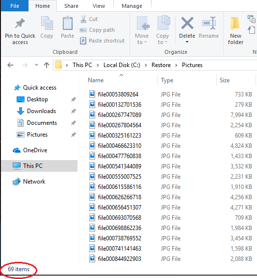

Definition of a disaster¶
This chapter describes how to recover from a disaster. Before we continue, we first have to define what a disaster actually is. Two categories can be distinguished:
- Loss or corruption of source files or the complete source system.
- Missing or corrupted backup files.
How to restore files to the original location of the same system and how to restore files from a consistent backup to a new computer is described in Restoring files from a backup and Restoring files if your Duplicati installation is lost.
This chapter describes the process of restoring as much as possible from a backup that is inconsistent due to corrupted or missing files at the backend, without access to the source files and the Duplicati setup.
Usually you can install Duplicati on any computer and point to the location that contains your backup to restore files. Duplicati will try to automatically recover from problems it finds, but is there is significant damage in your backup files, the restore process may fail, resulting in aborting the restore operation, leaving files unrecovered that are potentially restorable. In this situation you can use the Duplicati.CommandLine.RecoveryTool.exe to restore files that are not affected by the backup corruption. You can use this tool to perform the operations manually that are normally done automatically by the standard tools.
Test scenario¶
To explain the working of the Duplicati.CommandLine.RecoveryTool.exe, this setup is assumed:
The computer that contained the source files had 4 backup versions of the My Pictures folder. This computer, including Duplicati installation and picture files are assumed to be lost.
The backup location is an FTP server. The default Upload Volume size of 50MB is decreased to 10MB, resulting in more, but smaller files, which makes more sense for this example. After 4 backup operations, the files at the backend look like this:
10,453,901 duplicati-b69a2a32a50bb4c6d8780389efdbf7442.dblock.zip.aes
8,173 duplicati-i84de11dd9a334727a080a3cdedc11f76.dindex.zip.aes
10,409,309 duplicati-bb1e603b91cae420787ed855d40e7cc04.dblock.zip.aes
9,677 duplicati-i77fdd0fa598d49fa93c5fedf3dbf4003.dindex.zip.aes
10,408,733 duplicati-b8fd38dcd303c4bcdb65dc15611f9b13b.dblock.zip.aes
8,317 duplicati-id6042b5ed9c34faa86e41fd3bcff72d2.dindex.zip.aes
10,465,421 duplicati-bb1c167fdb8ef46e6a83fe1d5b8b33cbf.dblock.zip.aes
6,765 duplicati-i1070213c1cea4844b3ace60c305854de.dindex.zip.aes
10,484,045 duplicati-b2b4fb88d1edd4eccade6b0ea6fdbfcf3.dblock.zip.aes
11,341 duplicati-i0c85219ca5764fb183b4306e65ed2034.dindex.zip.aes
10,472,541 duplicati-bc70688944c1b4875b7561e8046dd582d.dblock.zip.aes
8,301 duplicati-i726df1085487421b98bf9786e40d045f.dindex.zip.aes
10,384,701 duplicati-bf43697c750e746aead28ceb71af19359.dblock.zip.aes
9,101 duplicati-ie084e3c9380847a8a01acefcb8245fe3.dindex.zip.aes
10,392,317 duplicati-bf797fdce00794d0dbeb31de1f3867240.dblock.zip.aes
7,501 duplicati-i91b0156c9ced43bda26b6cef88f969b3.dindex.zip.aes
1,754,637 duplicati-b13a41763d40e4001911fd6f5d5d6c53d.dblock.zip.aes
3,709 duplicati-id79f5ccc6cb54f5faa7bbcf72c8e7428.dindex.zip.aes
5,133 duplicati-20171109T100606Z.dlist.zip.aes
10,415,597 duplicati-bb4cb32561132426eba2e190089585362.dblock.zip.aes
8,125 duplicati-ifd7c3d7bed47403197515b40821075fc.dindex.zip.aes
10,433,469 duplicati-b385c55aa15bd403e9fcb5a321339e76a.dblock.zip.aes
6,909 duplicati-i59e5c4064b3d422995200772bd267645.dindex.zip.aes
10,447,373 duplicati-b4e0bcd6b8c0b4d648a97e53c32550cce.dblock.zip.aes
8,829 duplicati-i21d3fcafc53b42bfa0dfe4cfdcc6a0d9.dindex.zip.aes
10,425,485 duplicati-b34811487cc1843e289ac577b6a7a8533.dblock.zip.aes
8,093 duplicati-i92dcf425b2d14c8780c2938f84e2bc2c.dindex.zip.aes
8,052,173 duplicati-bc385594379874159b0863dca12818ac7.dblock.zip.aes
8,621 duplicati-ib02c8a76143440b99ec94773a7b00c90.dindex.zip.aes
6,829 duplicati-20171109T100653Z.dlist.zip.aes
10,397,085 duplicati-b836b265755ff41ae908ef64e551ec63b.dblock.zip.aes
8,717 duplicati-i0903704f50ec4277a0cb6e224bde49cb.dindex.zip.aes
10,404,509 duplicati-bc230fc2ccec54a33b2035fcbc0231ce4.dblock.zip.aes
7,741 duplicati-i53b454d535de49e1983364b97bd681a1.dindex.zip.aes
10,463,597 duplicati-b54b864868bf341bcb88bff9ad786b8a3.dblock.zip.aes
4,365 duplicati-id1e3d59e5e3e48f59a6fbd7f46b4bb8c.dindex.zip.aes
10,413,933 duplicati-b2b06934c5d764025a6965f1749d86a90.dblock.zip.aes
11,421 duplicati-ifd2b08eaf75b43748739c5a140cb1267.dindex.zip.aes
10,468,957 duplicati-b5f8cd40e22a54b5b988689370b8cde34.dblock.zip.aes
6,749 duplicati-ib9a135574fa84222beea313ac583463b.dindex.zip.aes
10,383,805 duplicati-bfa5ecd54953f455496a67b089e2ad35b.dblock.zip.aes
10,301 duplicati-i19aa26f9c15e432ea5114c93acd52661.dindex.zip.aes
4,505,165 duplicati-bd14cf57e975040808ac8d0f4bd9d5e36.dblock.zip.aes
4,797 duplicati-id08a17cbe0a04407b4be37d2c48e8ab9.dindex.zip.aes
8,749 duplicati-20171109T100737Z.dlist.zip.aes
10,483,357 duplicati-be6e935d55f0b443b8c716c83aebccb93.dblock.zip.aes
9,885 duplicati-ic209185103c045bb87a680e98b78269b.dindex.zip.aes
974,909 duplicati-b7fa18a6f863a42fea5f210cc5f1416e5.dblock.zip.aes
2,125 duplicati-i57ce5109be6c4441998fc2bfb2cd0f3a.dindex.zip.aes
9,901 duplicati-20171109T100815Z.dlist.zip.aes
There is one .dlist file for each backup version. The data itself is stored in a number of .dblock files. Each .dblock file has an accompanying .dindex file. This is a consistent backup, but in this test scenario, some files intentionally are corrupted by replacing the contents with random data and by removing a .dblock file.
Inventory of files that are going to be corrupted¶
Prior to corrupting the consistent backup, we can inventory what the consequences are if these files get lost. You can use the Duplicati command affected to see which files are affected by a remote file. The affected command needs the local database, so you can perform this operation only if you have a fully working Duplicati installation for this backup job. See The AFFECTED command for more information.
The first command returns which source files need information from the remote file duplicati-b69a2a32a50bb4c6d8780389efdbf7442.dblock.zip.aes.
Duplicati.CommandLine.exe affected "ftp://myftpserver.com/Backup/Pictures?auth-username=Duplicati&auth-password=backup" duplicati-b69a2a32a50bb4c6d8780389efdbf7442.dblock.zip.aes --dbpath="C:\Users\User\DuplicatiCanary\data\WCHNJBICGG.sqlite" --full-result
This command will return that all 4 backup versions need data from this file. These files are affected:
C:\Users\User\Pictures\file0001079221497.jpg C:\Users\User\Pictures\file0001116000079.jpg C:\Users\User\Pictures\file0001141038889.jpg C:\Users\User\Pictures\file0001176452626.jpg
The second command returns affected backup versions and source files for remote file duplicati-b5f8cd40e22a54b5b988689370b8cde34.dblock.zip.aes:
Duplicati.CommandLine.exe affected "ftp://myftpserver.com/Backup/Pictures?auth-username=Duplicati&auth-password=backup" duplicati-b5f8cd40e22a54b5b988689370b8cde34.dblock.zip.aes --dbpath="C:\Users\User\DuplicatiCanary\data\WCHNJBICGG.sqlite" --full-result</span></span>
Only the last 2 backup versions are affected (version 0 and 1), These 2 files cannot be restored if this remote file is missing or corrupted:
C:\Users\User\Pictures\file451264266022.jpg C:\Users\User\Pictures\file621250696198.jpg
Conclusion: if the 2 remote files mentioned above are not available, the 6 picture files should be considered lost, but with the Duplicati Recoverytool all other files in the backup should be recoverable.
Making the backup inconsistent¶
This is, of course, something that never should be done in a production environment, but for this test scenario we will intentionally damage the backup set, making it unusable for standard backup- and restore operations.
The following actions are performed on the backend:
- File
duplicati-b69a2a32a50bb4c6d8780389efdbf7442.dblock.zip.aesis deleted. - File
duplicati-b5f8cd40e22a54b5b988689370b8cde34.dblock.zip.aesis replaced by a file with the same name containing random data.
Restoring files from this corrupted backup set will fail before the first file is actually restored. You can recover from this situation by using one of these procedures:
- Recovering by purging unrestorable files from the backups.
- Recovering by using the Duplicati Recovery Tool.
Prerequisites for recovery¶
To be able to restore files in these scenarios, you will need:
- The protocol, location and credentials of the remote location where your backup files are stored.
- The passphrase used to encrypt your backup (if any).
- A computer that you can use for restoring data with enough free storage capacity for all files you want to restore
- The Duplicati Command Line tools. These tools are part of a standard Duplicati setup.
- If you are using the Duplicati Recovery Tool: temporary local storage with enough free space to store all backup files.
Recovering by purging files¶
If you still have access to your computer running Duplicati and the backup job has a valid local database, Duplicati can analyze the files that should be in the backup and compare this what's actually at the remote location. Use the Duplicati command list-broken-files to list files that cannot be restored due to corruption or missing data. The command purge-broken-files actually deletes these files from all backup versions.
To get an impression of the damage to the backup set, run this command:
Duplicati.CommandLine.exe list-broken-files "ftp://myftpserver.com/Backup/Pictures?auth-username=Duplicati&auth-password=backup" --dbpath="C:\Users\User\DuplicatiCanary\data\WCHNJBICGG.sqlite" --passphrase="4u7P_re5&+Gb>6NO{" --full-result
The result is:
No broken filesets found in database, checking for missing remote files
Listing remote folder ...
remote file duplicati-b5f8cd40e22a54b5b988689370b8cde34.dblock.zip.aes is listed as Verified with size 9569280 but should be 10468957, please verify the sha256 hash "hIPABrSE/6xN041ut6IKb0sUSMxYGRI3ZqAWwY+q6JM="
Marked 1 remote files for deletion
3 : 11/9/2017 11:06:06 AM (5 match(es))
C:\Users\User\Pictures\file0001079221497.jpg (4.89 MB)
C:\Users\User\Pictures\file0001116000079.jpg (302.49 KB)
C:\Users\User\Pictures\file0001141038889.jpg (3.50 MB)
C:\Users\User\Pictures\file0001176452626.jpg (1.65 MB)
2 : 11/9/2017 11:06:53 AM (4 match(es))
C:\Users\User\Pictures\file0001079221497.jpg (4.89 MB)
C:\Users\User\Pictures\file0001116000079.jpg (302.49 KB)
C:\Users\User\Pictures\file0001141038889.jpg (3.50 MB)
C:\Users\User\Pictures\file0001176452626.jpg (1.65 MB)
1 : 11/9/2017 11:07:37 AM (4 match(es))
C:\Users\User\Pictures\file0001079221497.jpg (4.89 MB)
C:\Users\User\Pictures\file0001116000079.jpg (302.49 KB)
C:\Users\User\Pictures\file0001141038889.jpg (3.50 MB)
C:\Users\User\Pictures\file0001176452626.jpg (1.65 MB)
0 : 11/9/2017 11:08:15 AM (4 match(es))
C:\Users\User\Pictures\file0001079221497.jpg (4.89 MB)
C:\Users\User\Pictures\file0001116000079.jpg (302.49 KB)
C:\Users\User\Pictures\file0001141038889.jpg (3.50 MB)
C:\Users\User\Pictures\file0001176452626.jpg (1.65 MB)
The 4 files from the deleted .dblock file are detected to be broken. Also detected is a change to the .dblock file that contains the other 2 files.
First we solve the problem with the deleted remote .dblock file by using the purge-broken-files command.
Add advanced option
--dry-runto the command below to see what the command will do, before actually purging the files from the backups.
Duplicati.CommandLine.exe purge-broken-files "ftp://myftpserver.com/Backup/Pictures?auth-username=Duplicati&auth-password=backup" --dbpath="C:\Users\User\DuplicatiCanary\data\WCHNJBICGG.sqlite" --passphrase="4u7P_re5&+Gb>6NO{" --full-result
The purge-broken-files command returns this information:
No broken filesets found in database, checking for missing remote files Listing remote folder ... remote file duplicati-b5f8cd40e22a54b5b988689370b8cde34.dblock.zip.aes is listed as Verified with size 9569280 but should be 10468957, please verify the sha256 hash "hIPABrSE/6xN041ut6IKb0sUSMxYGRI3ZqAWwY+q6JM=" Marked 1 remote files for deletion Found 4 broken filesets with 17 affected files, purging files Purging 5 file(s) from fileset 11/9/2017 11:06:06 AM Starting purge operation Replacing fileset duplicati-20171109T100606Z.dlist.zip.aes with duplicati-20171109T100607Z.dlist.zip.aes which has with 5 fewer file(s) (10.33 MB reduction) Uploading file (4.47 KB) ... Deleting file duplicati-20171109T100606Z.dlist.zip.aes ... Purging 4 file(s) from fileset 11/9/2017 11:06:53 AM Starting purge operation Replacing fileset duplicati-20171109T100653Z.dlist.zip.aes with duplicati-20171109T100654Z.dlist.zip.aes which has with 4 fewer file(s) (10.33 MB reduction) Uploading file (6.22 KB) ... Deleting file duplicati-20171109T100653Z.dlist.zip.aes ... Purging 4 file(s) from fileset 11/9/2017 11:07:37 AM Starting purge operation Replacing fileset duplicati-20171109T100737Z.dlist.zip.aes with duplicati-20171109T100738Z.dlist.zip.aes which has with 4 fewer file(s) (10.33 MB reduction) Uploading file (8.09 KB) ... Deleting file duplicati-20171109T100737Z.dlist.zip.aes ... Purging 4 file(s) from fileset 11/9/2017 11:08:15 AM Starting purge operation Replacing fileset duplicati-20171109T100815Z.dlist.zip.aes with duplicati-20171109T100816Z.dlist.zip.aes which has with 4 fewer file(s) (10.33 MB reduction) Uploading file (9.22 KB) ... Deleting file duplicati-20171109T100815Z.dlist.zip.aes ... Deleting file duplicati-b69a2a32a50bb4c6d8780389efdbf7442.dblock.zip.aes (9.97 MB) ... Operation Delete with file duplicati-b69a2a32a50bb4c6d8780389efdbf7442.dblock.zip.aes attempt 1 of 5 failed with message: The remote server returned an error: (550) File unavailable (e.g., file not found, no access). => The remote server returned an error: (550) File unavailable (e.g., file not found, no access).
Some information from the messages above:
duplicati-b5f8cd40e22a54b5b988689370b8cde34.dblock.zip.aesis corrupted and marked for deletion.- Files that cannot be restored are deleted from all backup versions that contain these files (17 total). Note that this are not 17 unique source files, one file is usually included in multiple backup versions.
- New, consistent backup files are generated and uploaded to the backend.
Recovering by using the Duplicati Recovery tool¶
The Duplicati Recovery tool allows to perform actions manually that are normally done automatically when running backup or restore operations. A normal restore consists of the following operatrions:
- Duplicati determines which remote files are needed to restore the specified files.
- Duplicati downloads the first required remote file.
- The file is decrypted using the supplied passphrase.
- Duplicati uses the .DINDEX files to determine how files can be recreated by merging blocks inside .DBLOCK files in the correct order.
- The recreated files are moved to the supplied Restore location.
The Duplicati Recovery Tool can perform these actions step by step, giving you more control over each step in the restore process.
In disaster recovery scenarios, the Duplicati Recovery Tool performs 3 steps:
- All remote files are downloaded from the backend, decrypted and stored in the local filesystem.
- An index is built that allows Duplicati to keep track of what information is stored in which file.
- Files are restored from the downloaded backend files by recreating them using the blocks inside the .DBLOCK files.
Optionally, these additional actions can be performed:
- List files that are available in the downloaded remote files.
- Recompress and/or re-upload files to the backend. This is useful if you want to change the compression type of an existing backup job. Changing the compression type (.7z to .zip) is not supported, but you can do this by downloading the complete backup, decrypt all files, extract all files, recompress the files using another compression type, re-encrypt the files and re-upload them to the backend. Additionally edit the backup configuration to use the new compression type for future backups.
Downloading all remote files using the Recovery Tool¶
The first step is downloading all files that are used by the backup job. This step is required, because a lot of read/write operations have to be performed to the remote files. All files must be decrypted and the contents of all files must be read to analyze the contents.
Remote files can be downloaded using the download command:
Duplicati.RecoveryTool.exe download <remoteurl> <localfolder> [options]
This command fill download all remote files from <remoteurl>, decrypt the files and store the decrypted files in <localfolder>.
Required information:
- Storage type
In this example the backup is stored using FTP, but all storage types are supported. See Storage Providers for more information. - Address, path and credentials to access the remote files
In this example the address ismyftpserver.com, the path is/Backup/Pictures, the FTP username isduplicatiand the FTP password isbackup. - The passphrase used to encrypt the backup
In this example the passphrase4u7P_re5&+Gb>6NO{was used for the backup. - Optional advanced options for access to the remote files
If you applied any options that are needed to get access to the backend files, supply these options here. See Storage Providers for more information.
Store information about your backup configuration (storage provider, storage location, credentials and passphrase) on a safe location that is also available when your computer Duplicati is lost. Without this information, your backup files are useless, because the passphrase is the only way to decrypt the files in your backup.
Create an empty folder in your local filesystem, for example C:\BackendFiles. Be sure that the location you download the backup files to has enough free space to store all backup files.
This command downloads and decrypts all backup files and stores these files in C:\BackendFiles:
Duplicati.CommandLine.RecoveryTool.exe download "ftp://myftpserver.com/Backup/Pictures?auth-username=duplicati&auth-password=backup" C:\BackendFiles --passphrase="4u7P_re5&+Gb>6NO{"
The output is something like this:
Listing files on backend: ftp ... Found 49 files 0: duplicati-20171109T100606Z.dlist.zip.aes - downloading (5.01 KB)... - decrypting ... done! 1: duplicati-20171109T100653Z.dlist.zip.aes - downloading (6.67 KB)... - decrypting ... done! 2: duplicati-20171109T100737Z.dlist.zip.aes - downloading (8.54 KB)... - decrypting ... done! 3: duplicati-20171109T100815Z.dlist.zip.aes - downloading (9.67 KB)... - decrypting ... done! 4: duplicati-b13a41763d40e4001911fd6f5d5d6c53d.dblock.zip.aes - downloading (1.67 MB)... - decrypting ... done! 5: duplicati-b2b06934c5d764025a6965f1749d86a90.dblock.zip.aes - downloading (9.93 MB)... - decrypting ... done! 6: duplicati-b2b4fb88d1edd4eccade6b0ea6fdbfcf3.dblock.zip.aes - downloading (10.00 MB)... - decrypting ... done! 7: duplicati-b34811487cc1843e289ac577b6a7a8533.dblock.zip.aes - downloading (9.94 MB)... - decrypting ... done! 8: duplicati-b385c55aa15bd403e9fcb5a321339e76a.dblock.zip.aes - downloading (9.95 MB)... - decrypting ... done! 9: duplicati-b4e0bcd6b8c0b4d648a97e53c32550cce.dblock.zip.aes - downloading (9.96 MB)... - decrypting ... done! 10: duplicati-b54b864868bf341bcb88bff9ad786b8a3.dblock.zip.aes - downloading (9.98 MB)... - decrypting ... done! 11: duplicati-b5f8cd40e22a54b5b988689370b8cde34.dblock.zip.aes - downloading (9.13 MB)... - decrypting ... error: System.IO.InvalidDataException: Invalid header marker at SharpAESCrypt.SharpAESCrypt.ReadEncryptionHeader(String password, Boolean skipFileSizeCheck) at SharpAESCrypt.SharpAESCrypt..ctor(String password, Stream stream, OperationMode mode, Boolean skipFileSizeCheck) at Duplicati.Library.Encryption.AESEncryption.Decrypt(Stream input) at Duplicati.Library.Encryption.EncryptionBase.Decrypt(Stream input, Stream output) at Duplicati.Library.Encryption.EncryptionBase.Decrypt(String inputfile, String outputfile) at Duplicati.CommandLine.RecoveryTool.Download.Run(List`1 args, Dictionary`2 options, IFilter filter) 12: duplicati-b7fa18a6f863a42fea5f210cc5f1416e5.dblock.zip.aes - downloading (952.06 KB)... - decrypting ... done! 13: duplicati-b836b265755ff41ae908ef64e551ec63b.dblock.zip.aes - downloading (9.92 MB)... - decrypting ... done! 14: duplicati-b8fd38dcd303c4bcdb65dc15611f9b13b.dblock.zip.aes - downloading (9.93 MB)... - decrypting ... done! 15: duplicati-bb1c167fdb8ef46e6a83fe1d5b8b33cbf.dblock.zip.aes - downloading (9.98 MB)... - decrypting ... done! 16: duplicati-bb1e603b91cae420787ed855d40e7cc04.dblock.zip.aes - downloading (9.93 MB)... - decrypting ... done! 17: duplicati-bb4cb32561132426eba2e190089585362.dblock.zip.aes - downloading (9.93 MB)... - decrypting ... done! 18: duplicati-bc230fc2ccec54a33b2035fcbc0231ce4.dblock.zip.aes - downloading (9.92 MB)... - decrypting ... done! 19: duplicati-bc385594379874159b0863dca12818ac7.dblock.zip.aes - downloading (7.68 MB)... - decrypting ... done! 20: duplicati-bc70688944c1b4875b7561e8046dd582d.dblock.zip.aes - downloading (9.99 MB)... - decrypting ... done! 21: duplicati-bd14cf57e975040808ac8d0f4bd9d5e36.dblock.zip.aes - downloading (4.30 MB)... - decrypting ... done! 22: duplicati-be6e935d55f0b443b8c716c83aebccb93.dblock.zip.aes - downloading (10.00 MB)... - decrypting ... done! 23: duplicati-bf43697c750e746aead28ceb71af19359.dblock.zip.aes - downloading (9.90 MB)... - decrypting ... done! 24: duplicati-bf797fdce00794d0dbeb31de1f3867240.dblock.zip.aes - downloading (9.91 MB)... - decrypting ... done! 25: duplicati-bfa5ecd54953f455496a67b089e2ad35b.dblock.zip.aes - downloading (9.90 MB)... - decrypting ... done! 26: duplicati-i0903704f50ec4277a0cb6e224bde49cb.dindex.zip.aes - Filetype Index, skipping 26: duplicati-i0c85219ca5764fb183b4306e65ed2034.dindex.zip.aes - Filetype Index, skipping 26: duplicati-i1070213c1cea4844b3ace60c305854de.dindex.zip.aes - Filetype Index, skipping 26: duplicati-i19aa26f9c15e432ea5114c93acd52661.dindex.zip.aes - Filetype Index, skipping 26: duplicati-i21d3fcafc53b42bfa0dfe4cfdcc6a0d9.dindex.zip.aes - Filetype Index, skipping 26: duplicati-i53b454d535de49e1983364b97bd681a1.dindex.zip.aes - Filetype Index, skipping 26: duplicati-i57ce5109be6c4441998fc2bfb2cd0f3a.dindex.zip.aes - Filetype Index, skipping 26: duplicati-i59e5c4064b3d422995200772bd267645.dindex.zip.aes - Filetype Index, skipping 26: duplicati-i726df1085487421b98bf9786e40d045f.dindex.zip.aes - Filetype Index, skipping 26: duplicati-i77fdd0fa598d49fa93c5fedf3dbf4003.dindex.zip.aes - Filetype Index, skipping 26: duplicati-i84de11dd9a334727a080a3cdedc11f76.dindex.zip.aes - Filetype Index, skipping 26: duplicati-i91b0156c9ced43bda26b6cef88f969b3.dindex.zip.aes - Filetype Index, skipping 26: duplicati-i92dcf425b2d14c8780c2938f84e2bc2c.dindex.zip.aes - Filetype Index, skipping 26: duplicati-ib02c8a76143440b99ec94773a7b00c90.dindex.zip.aes - Filetype Index, skipping 26: duplicati-ib9a135574fa84222beea313ac583463b.dindex.zip.aes - Filetype Index, skipping 26: duplicati-ic209185103c045bb87a680e98b78269b.dindex.zip.aes - Filetype Index, skipping 26: duplicati-id08a17cbe0a04407b4be37d2c48e8ab9.dindex.zip.aes - Filetype Index, skipping 26: duplicati-id1e3d59e5e3e48f59a6fbd7f46b4bb8c.dindex.zip.aes - Filetype Index, skipping 26: duplicati-id6042b5ed9c34faa86e41fd3bcff72d2.dindex.zip.aes - Filetype Index, skipping 26: duplicati-id79f5ccc6cb54f5faa7bbcf72c8e7428.dindex.zip.aes - Filetype Index, skipping 26: duplicati-ie084e3c9380847a8a01acefcb8245fe3.dindex.zip.aes - Filetype Index, skipping 26: duplicati-ifd2b08eaf75b43748739c5a140cb1267.dindex.zip.aes - Filetype Index, skipping 26: duplicati-ifd7c3d7bed47403197515b40821075fc.dindex.zip.aes - Filetype Index, skipping Download complete, of 49 remote files, 0 were downloaded with 1 errors
In this example, 49 files were found at the backend. From all .DBLOCK files, 1 file was corrupt and could not be decrypted. Files with the .DINDEX extension are index files that will be recreated, therefore they are not downloaded. 4 .DLIST files were found and downloaded to C:\BackendFiles.
As a result, the C:\BackendFiles folder contains 25 unencrypted .Zip files: 4 .dlist.zip files and 21 .dblock.zip files.
Creating an index of downloaded files using the Recovery Tool¶
When all files that contain applicable information are downloaded, an index file must be created. Without this index, we have nothing more than a bunch of files containing hashes and raw data. The index can be created with the Duplicati Recovery Tool using the index command:
Duplicati.RecoveryTool.exe index <localfolder> [options]
This command only requires the location of the local folder to be specified, in this example C:\BackendFiles. The index file will be created in the same folder. If you want the index file to be created in another folder, use advanced option --indexfile to specify the location. The Temporary files folder is used intensively by this process. Optionally you can specify a custom location with the --tempdir option.
To build an index of the files in C:\BackendFiles, use this command:
Duplicati.CommandLine.RecoveryTool.exe index "C:\BackendFiles"
The output is similar to this:
Processing 26 files 0: C:\BackendFiles\duplicati-20171109T100606Z.dlist.zip - Filetype Files, skipping 0: C:\BackendFiles\duplicati-20171109T100653Z.dlist.zip - Filetype Files, skipping 0: C:\BackendFiles\duplicati-20171109T100737Z.dlist.zip - Filetype Files, skipping 0: C:\BackendFiles\duplicati-20171109T100815Z.dlist.zip - Filetype Files, skipping 0: C:\BackendFiles\duplicati-b13a41763d40e4001911fd6f5d5d6c53d.dblock.zip 21 hashes found, sorting ... done! Merging 21 hashes ... done! 1: C:\BackendFiles\duplicati-b2b06934c5d764025a6965f1749d86a90.dblock.zip 111 hashes found, sorting ... done! Merging 132 hashes ... done! 2: C:\BackendFiles\duplicati-b2b4fb88d1edd4eccade6b0ea6fdbfcf3.dblock.zip 116 hashes found, sorting ... done! Merging 248 hashes ... done! 3: C:\BackendFiles\duplicati-b34811487cc1843e289ac577b6a7a8533.dblock.zip 113 hashes found, sorting ... done! Merging 361 hashes ... done! 4: C:\BackendFiles\duplicati-b385c55aa15bd403e9fcb5a321339e76a.dblock.zip 109 hashes found, sorting ... done! Merging 470 hashes ... done! 5: C:\BackendFiles\duplicati-b4e0bcd6b8c0b4d648a97e53c32550cce.dblock.zip 108 hashes found, sorting ... done! Merging 578 hashes ... done! 6: C:\BackendFiles\duplicati-b54b864868bf341bcb88bff9ad786b8a3.dblock.zip 103 hashes found, sorting ... done! Merging 681 hashes ... done! 7: C:\BackendFiles\duplicati-b7fa18a6f863a42fea5f210cc5f1416e5.dblock.zip 15 hashes found, sorting ... done! Merging 696 hashes ... done! 8: C:\BackendFiles\duplicati-b836b265755ff41ae908ef64e551ec63b.dblock.zip 114 hashes found, sorting ... done! Merging 810 hashes ... done! 9: C:\BackendFiles\duplicati-b8fd38dcd303c4bcdb65dc15611f9b13b.dblock.zip 109 hashes found, sorting ... done! Merging 919 hashes ... done! 10: C:\BackendFiles\duplicati-bb1c167fdb8ef46e6a83fe1d5b8b33cbf.dblock.zip 111 hashes found, sorting ... done! Merging 1030 hashes ... done! 11: C:\BackendFiles\duplicati-bb1e603b91cae420787ed855d40e7cc04.dblock.zip 120 hashes found, sorting ... done! Merging 1150 hashes ... done! 12: C:\BackendFiles\duplicati-bb4cb32561132426eba2e190089585362.dblock.zip 108 hashes found, sorting ... done! Merging 1258 hashes ... done! 13: C:\BackendFiles\duplicati-bc230fc2ccec54a33b2035fcbc0231ce4.dblock.zip 108 hashes found, sorting ... done! Merging 1366 hashes ... done! 14: C:\BackendFiles\duplicati-bc385594379874159b0863dca12818ac7.dblock.zip 86 hashes found, sorting ... done! Merging 1452 hashes ... done! 15: C:\BackendFiles\duplicati-bc70688944c1b4875b7561e8046dd582d.dblock.zip 114 hashes found, sorting ... done! Merging 1566 hashes ... done! 16: C:\BackendFiles\duplicati-bd14cf57e975040808ac8d0f4bd9d5e36.dblock.zip 50 hashes found, sorting ... done! Merging 1616 hashes ... done! 17: C:\BackendFiles\duplicati-be6e935d55f0b443b8c716c83aebccb93.dblock.zip 122 hashes found, sorting ... done! Merging 1738 hashes ... done! 18: C:\BackendFiles\duplicati-bf43697c750e746aead28ceb71af19359.dblock.zip 112 hashes found, sorting ... done! Merging 1850 hashes ... done! 19: C:\BackendFiles\duplicati-bf797fdce00794d0dbeb31de1f3867240.dblock.zip 110 hashes found, sorting ... done! Merging 1960 hashes ... done! 20: C:\BackendFiles\duplicati-bfa5ecd54953f455496a67b089e2ad35b.dblock.zip 107 hashes found, sorting ... done! Merging 2067 hashes ... done! 21: C:\BackendFiles\index.txt - Not a Duplicati file, ignoring Processed 21 files and found 2067 hashes
The resulting index file index.txt contains a list of hashes and .DBLOCK filenames.
List backup versions and files using the Recovery Tool¶
Before the actual restore operation is performed, you can see what is inside the downloaded and encrypted remote files. Use the Recovery Tool's list command to retrieve this information:
Duplicati.RecoveryTool.exe list <localfolder> [version] [options]
Without a version specified, all available backup versions are listed. When a version number is supplied, all restorable files from that backup version are listed. Try these commands:
Duplicati.CommandLine.RecoveryTool.exe list C:\BackendFiles
Duplicati.CommandLine.RecoveryTool.exe list C:\BackendFiles 0
Restoring files using the Recovery Tool¶
After all backup files are downloaded, decrypted and indexed, you can start with the actual restore process. With the Duplicati Recovery Tool, use therestore command to restore all files that can be recovered from any backup version to the location of your choice:
Duplicati.RecoveryTool.exe restore <localfolder> [version] [options]
<localfolder> is a required option. It should point to the location where your downloaded remote files are stored. Optionally add --targetpath to specify where files must be restored to, otherwise the files are restored to their original locations. Use filters or the --exclude option to perform a partial restore. See exclude and APPENDIX D Filters for more information.
In this example, files are restored to C:\Restore, so an empty folder C:\Restore is created first.
This command will restore all files from the latest backup version (0) to C:\Restore:
Duplicati.CommandLine.RecoveryTool.exe restore C:\BackendFiles 0 --targetpath="C:\Restore"
The output starts with something similar to this:
Sorting index file ... done! Building lookup table for file hashes Index file has 2047 hashes in total Building lookup table with 2046 entries, giving increments of 1 Computing restore path Restoring 75 files to C:\Restore Removing common prefix C:\Users\User\ from files
All restored files are listed. The list probably contains errors, because files that need data from corrupted blocks cannot be restored.
In this example, from a corrupted backup with one deleted dblock file and one corrupted dblock file, 69 of 75 picture files were recovered successfully.
